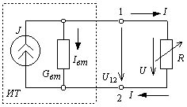

Источник (электрического) тока:
Источник (электрического) тока
- это источник электромагнитной энергии, характеризующийся током
J
в нем и внутренней проводимостью
G
вт
.

(Англ.):
Current source
(Нем.):
Stromquelle
f
(Фр.):
Source
/f/
de courant électrique